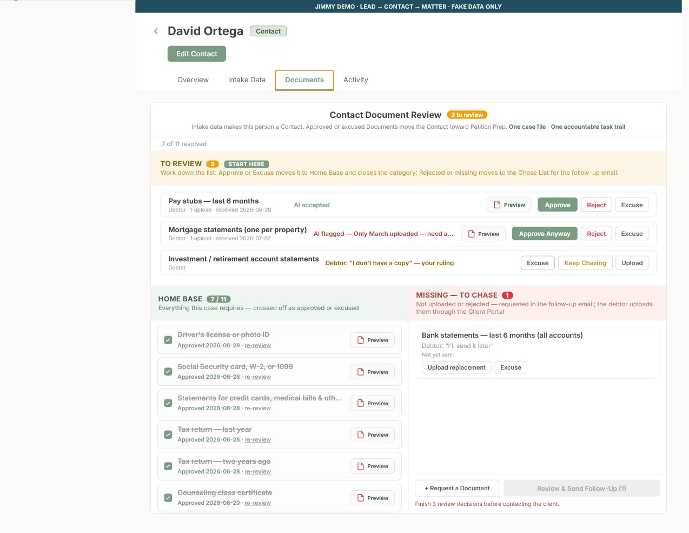
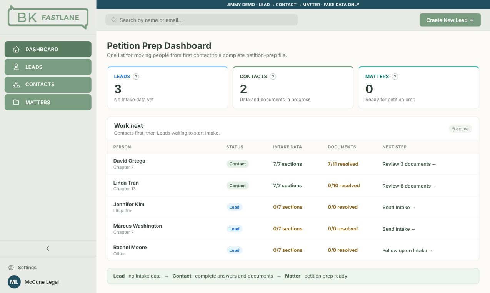

Lead
The firm has no Intake answers yet. The next job is to get the person started.
A plain-English review of the BK FastLane CRM, the redesigned Document Review workflow, and the most useful lessons adopted from Glade and Clio.
The CRM is now centered on moving a potential bankruptcy client from first contact to a complete, firm-reviewed file that can be used to begin petition preparation.
Use this as the product-design baseline. Keep improving this exact Intake-to-petition-prep path. Do not add broad post-filing case management until the core workflow is secure, connected, and proven with staff.
The firm has no Intake answers yet. The next job is to get the person started.
Some Intake data exists, but answers or Documents still need work.
Intake data and Document requests are complete. Petition prep can begin.
The redesign focuses on the part of the workflow where the firm must make a real decision: approve, reject, excuse, or continue requesting a Document.

AI may pre-screen an upload and draft administrative work, but it cannot give final approval. An AI-flag override requires a written firm reason.
The goal was not to copy either product. It was to adopt their strongest operating ideas while keeping Matt's four-part CRM understandable to a solo bankruptcy firm.
Glade is the closer comparison because it is designed around bankruptcy work rather than a general sales pipeline.
Clio is broader, but it demonstrates the operating discipline expected from production legal software.

The current site is a synthetic product demonstration. Production readiness requires security, reliable system connections, and server-side accountability—not more screens.
The workflow is suitable for design review and synthetic paralegal testing only.
Use an append-only upload history with uploader, timestamps, review state, reviewer, decision, client reason, internal note, and replacement relationship.
Answers and uploads should update the same Contact automatically. Staff should never retype the debtor's information.
Implement authentication, permissions, protected storage, expiring access, and an immutable audit trail before real client information enters the CRM.
Test joint filers, unreadable files, missing months, repeat rejections, contradictory answers, and late replacements with real firm staff.
Keep a manual fallback and verify every export. Expand only after the firm can show dependable handling and recovery from mistakes.
| Decision | Recommendation |
|---|---|
| Share this fake-data demo with Matt | Yes |
| Use this design as the CRM baseline | Yes |
| Continue synthetic paralegal testing | Yes |
| Put real debtor data in it today | No |
| Sell it as production-ready today | No |
The next value comes from making this exact workflow secure, reliable, and connected—not from adding more screens.